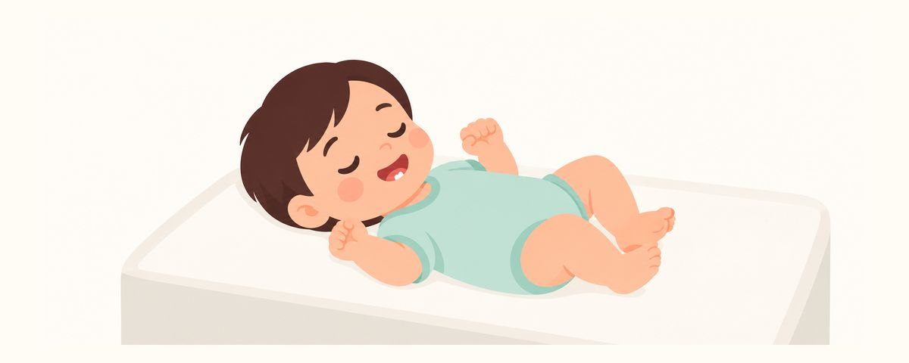

宝宝一出生就有牙？诞生牙、新生牙的观察方法与就医时机
出生时就有、或出生后第一个月内长出的牙很少见，大多是提早长出的正常乳牙。这里整理了在家要观察什么、怎么清洁，以及需要马上看牙医的信号。
要点速览
- 大多是提早长出的正常乳牙
- 很松？可能被吞下，请马上看牙医
- 不要晃动，也别试着拔掉
刚出生的宝宝嘴里竟然有一颗小牙，很多家长都会吓一跳。要不要拔？还能不能喂奶？会不会伤到宝宝？担心一个接一个。这篇文章把家长需要了解的内容一步步整理出来。
为什么一出生就有牙
第一颗乳牙通常在6个月左右长出。但极少数宝宝出生时就带着牙，这叫诞生牙；出生后第一个月内长出的牙，叫新生牙。名字不同，家长要观察的地方是一样的。
这种牙通常长在下门牙的位置，一两颗。大多数并不是什么特殊的牙，而是正常乳牙提早冒了出来。宝宝出生时，牙床里已经有20颗乳牙在发育，其中一颗只是比别人更早露了面。少数情况下也可能是正常乳牙以外的多生牙，这需要牙医来判断。
提早长出的牙，牙根往往还没长好，所以可能会松动。因此最重要的是看它长得牢不牢。如果牙齿稳固、吃奶也顺利，就不用拔，保留观察。保留下来的牙，会像其他乳牙一样陪着宝宝长大。
这不是家长做错了什么造成的。大多数只是提早长出的正常乳牙，不必太担心，有疑问就在就诊时放心地问牙医。
相反，很松的牙可能掉下来，被宝宝吞下或吸入气道，所以需要牙医来判断怎么处理。
在家这样观察
每天看宝宝嘴里的时候，可以按这个顺序检查：
- 把手洗干净，用手指轻轻碰一碰牙齿，看看有多松。不要特意前后晃动。
- 看看宝宝舌头下面有没有发红、破溃。吃奶时舌头反复蹭到牙尖，可能会磨出伤口。
- 如果是母乳喂养，也留意自己的乳头有没有破损或疼痛。
- 喂奶后，把湿纱布缠在手指上，轻轻擦拭牙齿和牙龈。
家长常犯的一个错误，是觉得“反正迟早要掉”，就在家晃一晃想把它拔下来。新生儿的牙龈很娇嫩，容易受伤，掉下来的牙还可能被吞下。不要硬拔，也不要晃动，交给牙医处理。
如果喂奶时乳头疼，请人帮忙检查一下喂奶姿势和衔乳方式，也可能有帮助。如果疼痛持续，或者宝宝吃不好奶，请咨询牙医。
牙医会综合看牙齿有多松、是否影响吃奶、舌头下面有没有伤口，再决定是否保留。就诊前把在家观察到的情况记下来或拍张照片，说明起来会更方便。
常见问题
有牙就一定要拔吗？
不是。大多数是提早长出的正常乳牙，只要牙齿稳固、吃奶顺利，就保留观察。如果很松或者影响吃奶，再由牙医决定怎么处理。
有牙还能母乳喂养吗？
可以，大多数情况下都能继续喂奶。不过如果妈妈的乳头被磨破，或者宝宝舌头下面出现破溃，请到儿童牙科检查一下。
牙龈上的小白点和牙齿怎么区分？
新生儿的牙龈或上腭上常常能看到像米粒一样的小白点，它们不是牙，而是会自己消失的小囊肿。如果摸起来硬硬的、看着像牙，请牙医确认最准确。
牙齿要怎么清洁？
喂奶后用湿纱布轻轻擦拭牙齿和牙龈就可以了。适合宝宝的清洁方法，可以在看牙医时一起确认。
这些情况请看牙医
- 牙齿很松时（别等，马上去）
- 宝宝含不住乳头，或者吃奶困难时
- 宝宝舌头下面出现破溃时
- 每次喂奶，妈妈的乳头都破损或疼痛时
- 想确认这是正常乳牙还是多生牙时
在合适的时候收到提醒
在牙齿日历应用中输入孩子的出生日期（或预产期），这些文章就会在需要的时候以提醒的形式送达。免费使用，无需注册。
参考来源
- AAPD · Perinatal and Infant Oral Health Care (2023)
本应用中的信息仅供一般科普教育之用，不能替代专业的牙科诊疗。关于孩子的具体情况，请咨询牙医。